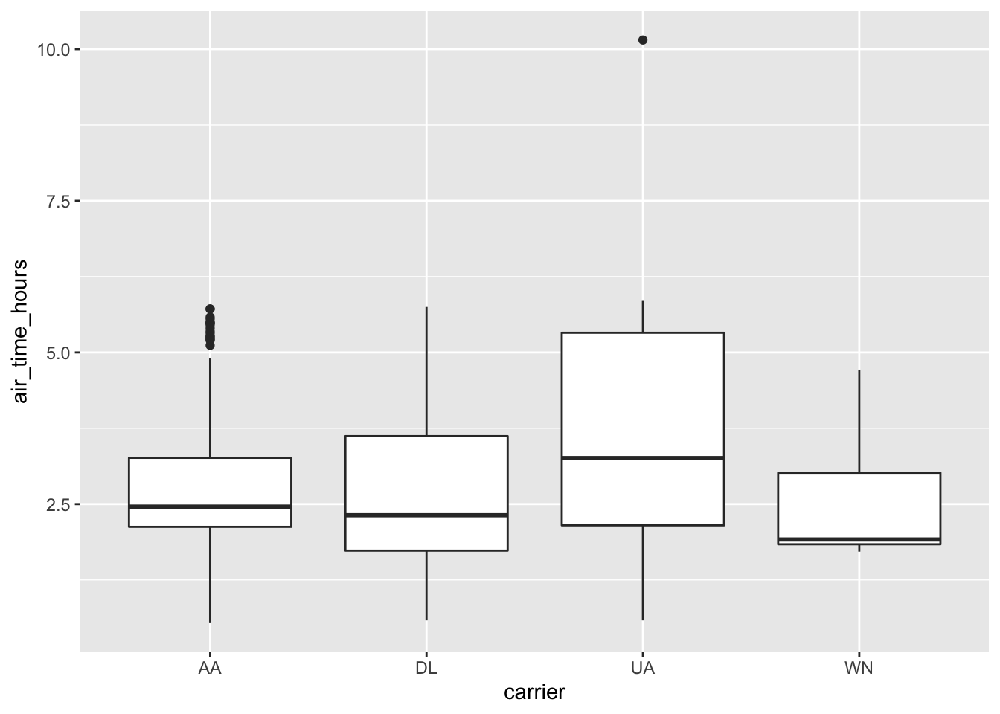

library(sparklyr)
library(dplyr)
library(ggplot2)
sc <- spark_connect(master="local")
flights_tbl <- copy_to(sc, nycflights13::flights, "flights")
airlines_tbl <- copy_to(sc, nycflights13::airlines, "airlines")Manipulating Data with dplyr
Overview
dplyr is an R package for working with structured data both in and outside of R. dplyr makes data manipulation for R users easy, consistent, and performant. With dplyr as an interface to manipulating Spark DataFrames, you can:
- Select, filter, and aggregate data
- Use window functions (e.g. for sampling)
- Perform joins on
DataFrames - Collect data from Spark into R
Statements in dplyr can be chained together using pipes defined by the magrittr R package. dplyr also supports non-standard evalution of its arguments. For more information on dplyr, see the introduction, a guide for connecting to databases, and a variety of vignettes.
Flights Data
This guide will demonstrate some of the basic data manipulation verbs of dplyr by using data from the nycflights13 R package. This package contains data for all 336,776 flights departing New York City in 2013. It also includes useful metadata on airlines, airports, weather, and planes. The data comes from the US Bureau of Transportation Statistics, and is documented in ?nycflights13
Connect to the cluster and copy the flights data using the copy_to() function. Caveat: The flight data in nycflights13 is convenient for dplyr demonstrations because it is small, but in practice large data should rarely be copied directly from R objects.
dplyr Verbs
Verbs are dplyr commands for manipulating data. When connected to a Spark DataFrame, dplyr translates the commands into Spark SQL statements. Remote data sources use exactly the same five verbs as local data sources. Here are the five verbs with their corresponding SQL commands:
select()~SELECTfilter()~WHEREarrange()~ORDERsummarise()~aggregators: sum, min, sd, etc.mutate()~operators: +, *, log, etc.
select(flights_tbl, year:day, arr_delay, dep_delay)
#> # Source: spark<?> [?? x 5]
#> year month day arr_delay dep_delay
#> <int> <int> <int> <dbl> <dbl>
#> 1 2013 1 1 11 2
#> 2 2013 1 1 20 4
#> 3 2013 1 1 33 2
#> 4 2013 1 1 -18 -1
#> 5 2013 1 1 -25 -6
#> 6 2013 1 1 12 -4
#> 7 2013 1 1 19 -5
#> 8 2013 1 1 -14 -3
#> 9 2013 1 1 -8 -3
#> 10 2013 1 1 8 -2
#> # … with more rowsfilter(flights_tbl, dep_delay > 1000)
#> # Source: spark<?> [?? x 19]
#> year month day dep_time sched…¹ dep_d…² arr_t…³ sched…⁴
#> <int> <int> <int> <int> <int> <dbl> <int> <int>
#> 1 2013 1 9 641 900 1301 1242 1530
#> 2 2013 1 10 1121 1635 1126 1239 1810
#> 3 2013 6 15 1432 1935 1137 1607 2120
#> 4 2013 7 22 845 1600 1005 1044 1815
#> 5 2013 9 20 1139 1845 1014 1457 2210
#> # … with 11 more variables: arr_delay <dbl>, carrier <chr>,
#> # flight <int>, tailnum <chr>, origin <chr>, dest <chr>,
#> # air_time <dbl>, distance <dbl>, hour <dbl>,
#> # minute <dbl>, time_hour <dttm>, and abbreviated
#> # variable names ¹sched_dep_time, ²dep_delay, ³arr_time,
#> # ⁴sched_arr_timearrange(flights_tbl, desc(dep_delay))
#> # Source: spark<?> [?? x 19]
#> # Ordered by: desc(dep_delay)
#> year month day dep_t…¹ sched…² dep_d…³ arr_t…⁴ sched…⁵
#> <int> <int> <int> <int> <int> <dbl> <int> <int>
#> 1 2013 1 9 641 900 1301 1242 1530
#> 2 2013 6 15 1432 1935 1137 1607 2120
#> 3 2013 1 10 1121 1635 1126 1239 1810
#> 4 2013 9 20 1139 1845 1014 1457 2210
#> 5 2013 7 22 845 1600 1005 1044 1815
#> 6 2013 4 10 1100 1900 960 1342 2211
#> 7 2013 3 17 2321 810 911 135 1020
#> 8 2013 6 27 959 1900 899 1236 2226
#> 9 2013 7 22 2257 759 898 121 1026
#> 10 2013 12 5 756 1700 896 1058 2020
#> # … with more rows, 11 more variables: arr_delay <dbl>,
#> # carrier <chr>, flight <int>, tailnum <chr>,
#> # origin <chr>, dest <chr>, air_time <dbl>,
#> # distance <dbl>, hour <dbl>, minute <dbl>,
#> # time_hour <dttm>, and abbreviated variable names
#> # ¹dep_time, ²sched_dep_time, ³dep_delay, ⁴arr_time,
#> # ⁵sched_arr_timesummarise(
flights_tbl,
mean_dep_delay = mean(dep_delay, na.rm = TRUE)
)
#> # Source: spark<?> [?? x 1]
#> mean_dep_delay
#> <dbl>
#> 1 12.6mutate(flights_tbl, speed = distance / air_time * 60)
#> # Source: spark<?> [?? x 20]
#> year month day dep_t…¹ sched…² dep_d…³ arr_t…⁴ sched…⁵
#> <int> <int> <int> <int> <int> <dbl> <int> <int>
#> 1 2013 1 1 517 515 2 830 819
#> 2 2013 1 1 533 529 4 850 830
#> 3 2013 1 1 542 540 2 923 850
#> 4 2013 1 1 544 545 -1 1004 1022
#> 5 2013 1 1 554 600 -6 812 837
#> 6 2013 1 1 554 558 -4 740 728
#> 7 2013 1 1 555 600 -5 913 854
#> 8 2013 1 1 557 600 -3 709 723
#> 9 2013 1 1 557 600 -3 838 846
#> 10 2013 1 1 558 600 -2 753 745
#> # … with more rows, 12 more variables: arr_delay <dbl>,
#> # carrier <chr>, flight <int>, tailnum <chr>,
#> # origin <chr>, dest <chr>, air_time <dbl>,
#> # distance <dbl>, hour <dbl>, minute <dbl>,
#> # time_hour <dttm>, speed <dbl>, and abbreviated variable
#> # names ¹dep_time, ²sched_dep_time, ³dep_delay,
#> # ⁴arr_time, ⁵sched_arr_timeLaziness
When working with databases, dplyr tries to be as lazy as possible:
It never pulls data into R unless you explicitly ask for it.
It delays doing any work until the last possible moment: it collects together everything you want to do and then sends it to the database in one step.
For example, take the following code:
c1 <- filter(
flights_tbl,
day == 17, month == 5, carrier %in% c('UA', 'WN', 'AA', 'DL')
)
c2 <- select(c1, year, month, day, carrier, dep_delay, air_time, distance)
c3 <- mutate(c2, air_time_hours = air_time / 60)
c4 <- arrange(c3, year, month, day, carrier)This sequence of operations never actually touches the database. It’s not until you ask for the data (e.g. by printing c4) that dplyr requests the results from the database.
c4
#> # Source: spark<?> [?? x 8]
#> # Ordered by: year, month, day, carrier
#> year month day carrier dep_d…¹ air_t…² dista…³ air_t…⁴
#> <int> <int> <int> <chr> <dbl> <dbl> <dbl> <dbl>
#> 1 2013 5 17 AA -7 142 1089 2.37
#> 2 2013 5 17 AA -9 186 1389 3.1
#> 3 2013 5 17 AA -6 143 1096 2.38
#> 4 2013 5 17 AA -7 119 733 1.98
#> 5 2013 5 17 AA -4 114 733 1.9
#> 6 2013 5 17 AA -2 146 1085 2.43
#> 7 2013 5 17 AA -2 185 1372 3.08
#> 8 2013 5 17 AA -3 193 1598 3.22
#> 9 2013 5 17 AA -7 137 944 2.28
#> 10 2013 5 17 AA -1 195 1389 3.25
#> # … with more rows, and abbreviated variable names
#> # ¹dep_delay, ²air_time, ³distance, ⁴air_time_hoursPiping
You can use magrittr pipes to write cleaner syntax. Using the same example from above, you can write a much cleaner version like this:
c4 <- flights_tbl %>%
filter(month == 5, day == 17, carrier %in% c('UA', 'WN', 'AA', 'DL')) %>%
select(carrier, dep_delay, air_time, distance) %>%
mutate(air_time_hours = air_time / 60) %>%
arrange(carrier) Grouping
The group_by() function corresponds to the GROUP BY statement in SQL.
flights_tbl %>%
group_by(carrier) %>%
summarize(
count = n(),
mean_dep_delay = mean(dep_delay, na.rm = FALSE)
)
#> Warning: Missing values are always removed in SQL aggregation functions.
#> Use `na.rm = TRUE` to silence this warning
#> This warning is displayed once every 8 hours.
#> # Source: spark<?> [?? x 3]
#> carrier count mean_dep_delay
#> <chr> <dbl> <dbl>
#> 1 WN 12275 17.7
#> 2 VX 5162 12.9
#> 3 YV 601 19.0
#> 4 DL 48110 9.26
#> 5 OO 32 12.6
#> 6 B6 54635 13.0
#> 7 F9 685 20.2
#> 8 EV 54173 20.0
#> 9 US 20536 3.78
#> 10 UA 58665 12.1
#> # … with more rowsCollecting to R
You can copy data from Spark into R’s memory by using collect().
carrierhours <- collect(c4)collect() executes the Spark query and returns the results to R for further analysis and visualization.
# Test the significance of pairwise differences and plot the results
with(carrierhours, pairwise.t.test(air_time, carrier))
#>
#> Pairwise comparisons using t tests with pooled SD
#>
#> data: air_time and carrier
#>
#> AA DL UA
#> DL 0.25057 - -
#> UA 0.07957 0.00044 -
#> WN 0.07957 0.23488 0.00041
#>
#> P value adjustment method: holmcarrierhours %>%
ggplot() +
geom_boxplot(aes(carrier, air_time_hours))
SQL Translation
It’s relatively straightforward to translate R code to SQL (or indeed to any programming language) when doing simple mathematical operations of the form you normally use when filtering, mutating and summarizing. dplyr knows how to convert the following R functions to Spark SQL:
# Basic math operators
+, -, *, /, %%, ^
# Math functions
abs, acos, asin, asinh, atan, atan2, ceiling, cos, cosh, exp, floor, log,
log10, round, sign, sin, sinh, sqrt, tan, tanh
# Logical comparisons
<, <=, !=, >=, >, ==, %in%
# Boolean operations
&, &&, |, ||, !
# Character functions
paste, tolower, toupper, nchar
# Casting
as.double, as.integer, as.logical, as.character, as.date
# Basic aggregations
mean, sum, min, max, sd, var, cor, cov, ndplyr supports Spark SQL window functions. Window functions are used in conjunction with mutate and filter to solve a wide range of problems. You can compare the dplyr syntax to the query it has generated by using dplyr::show_query().
# Rank each flight within a daily
ranked <- flights_tbl %>%
group_by(year, month, day) %>%
select(dep_delay) %>%
mutate(rank = rank(desc(dep_delay)))
#> Adding missing grouping variables: `year`, `month`, and `day`
dplyr::show_query(ranked)
#> <SQL>
#> SELECT
#> `year`,
#> `month`,
#> `day`,
#> `dep_delay`,
#> RANK() OVER (PARTITION BY `year`, `month`, `day` ORDER BY `dep_delay` DESC) AS `rank`
#> FROM `flights`ranked
#> # Source: spark<?> [?? x 5]
#> # Groups: year, month, day
#> year month day dep_delay rank
#> <int> <int> <int> <dbl> <int>
#> 1 2013 1 1 853 1
#> 2 2013 1 1 379 2
#> 3 2013 1 1 290 3
#> 4 2013 1 1 285 4
#> 5 2013 1 1 260 5
#> 6 2013 1 1 255 6
#> 7 2013 1 1 216 7
#> 8 2013 1 1 192 8
#> 9 2013 1 1 157 9
#> 10 2013 1 1 155 10
#> # … with more rowsPeforming Joins
It’s rare that a data analysis involves only a single table of data. In practice, you’ll normally have many tables that contribute to an analysis, and you need flexible tools to combine them. In dplyr, there are three families of verbs that work with two tables at a time:
Mutating joins, which add new variables to one table from matching rows in another.
Filtering joins, which filter observations from one table based on whether or not they match an observation in the other table.
Set operations, which combine the observations in the data sets as if they were set elements.
All two-table verbs work similarly. The first two arguments are x and y, and provide the tables to combine. The output is always a new table with the same type as x.
flights_tbl %>%
left_join(airlines_tbl, by = "carrier") %>%
select(name, flight, dep_time)
#> # Source: spark<?> [?? x 3]
#> name flight dep_time
#> <chr> <int> <int>
#> 1 Virgin America 399 658
#> 2 Virgin America 11 729
#> 3 Virgin America 407 859
#> 4 Virgin America 251 932
#> 5 Virgin America 23 1031
#> 6 Virgin America 409 1133
#> 7 Virgin America 25 1203
#> 8 Virgin America 411 1327
#> 9 Virgin America 27 1627
#> 10 Virgin America 413 1655
#> # … with more rowsSampling
You can use sample_n() and sample_frac() to take a random sample of rows: use sample_n() for a fixed number and sample_frac() for a fixed fraction.
sample_n(flights_tbl, 10) %>%
select(1:4)
#> # Source: spark<?> [?? x 4]
#> year month day dep_time
#> <int> <int> <int> <int>
#> 1 2013 6 21 1258
#> 2 2013 9 19 1947
#> 3 2013 8 12 1442
#> 4 2013 11 9 1412
#> 5 2013 9 7 826
#> 6 2013 4 4 1605
#> 7 2013 6 16 1306
#> 8 2013 9 15 1501
#> 9 2013 8 14 1324
#> 10 2013 9 30 1258sample_frac(flights_tbl, 0.01) %>%
count()
#> # Source: spark<?> [?? x 1]
#> n
#> <dbl>
#> 1 3368Hive Functions
Many of Hive’s built-in functions (UDF) and built-in aggregate functions (UDAF) can be called inside dplyr’s mutate and summarize. The Languange Reference UDF page provides the list of available functions.
The following example uses the datediff and current_date Hive UDFs to figure the difference between the flight_date and the current system date:
flights_tbl %>%
mutate(
flight_date = paste(year,month,day,sep="-"),
days_since = datediff(current_date(), flight_date)
) %>%
group_by(flight_date,days_since) %>%
count() %>%
arrange(-days_since)
#> # Source: spark<?> [?? x 3]
#> # Groups: flight_date
#> # Ordered by: -days_since
#> flight_date days_since n
#> <chr> <int> <dbl>
#> 1 2013-1-1 3527 842
#> 2 2013-1-2 3526 943
#> 3 2013-1-3 3525 914
#> 4 2013-1-4 3524 915
#> 5 2013-1-5 3523 720
#> 6 2013-1-6 3522 832
#> 7 2013-1-7 3521 933
#> 8 2013-1-8 3520 899
#> 9 2013-1-9 3519 902
#> 10 2013-1-10 3518 932
#> # … with more rowsspark_disconnect(sc)